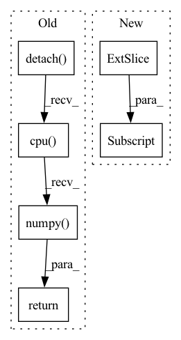

Pattern ID :18697
Before Change
state = torch.FloatTensor(np.array([state])).to(util.device)
action, log_prob, mean, std = self.policy_network.sample(state)
if deterministic:
return mean.detach().cpu().numpy() [0], log_prob
else:
return action.detach().cpu().numpy()[0], log_prob
After Change
def select_action(self, state, deterministic=False):
if not isinstance(state, torch.Tensor):
state = torch.FloatTensor(state[None, :] ).to(util.device)
with torch.no_grad():
action_scaled, log_prob = \In pattern: SUPERPATTERN
Frequency: 4
Non-data size: 6
Instances Fragment ID: 60904817
Project Name: x35f/unstable_baselines
Commit Name: cf891e10b7e0a059442c1c8f6d4d2f9747eeb3ca
Time: 2021-12-07
Author: typoverflow@outlook.com
File Name: unstable_baselines/baselines/sac/agent.py
M Class Name: SACAgent
N Class Name: SACAgent
M Method Name: select_action(3)
N Method Name: select_action(3)
M Parent Class: BaseAgent,torch.nn.Module
N Parent Class: BaseAgent,torch.nn.Module
M File Name: unstable_baselines/baselines/sac/agent.py
N File Name: unstable_baselines/baselines/sac/agent.py
M Start Line: 141
M End Line: 147
N Start Line: 155
N End Line: 162
Before Change
score = self.compute_score(h_embs=head_emb, r_embs=relation_emb, t_embs=tail_emb)
return score.detach().cpu().numpy()
def forward(self, pos_exmpls, neg_exmpls):
After Change
triples = torch.tensor(triples, dtype=torch.long, device=self.device)
heads = triples[:, 0:1]
relations = triples[:, 1:2]
tails = triples[:, 2:3]
head_embs = self.entities_embeddings(heads)
relation_embs = self.relation_embeddings(relations) Fragment ID: 60904809
Project Name: pykeen/pykeen
Commit Name: 6d22eecc96c945600e37723639a072c7fe257ffd
Time: 2018-07-24
Author: ali-mehdi@live.de
File Name: src/kg_embeddings_model/trans_e.py
M Class Name: TransE
N Class Name: TransE
M Method Name: predict(2)
N Method Name: predict(2)
M Parent Class: nn.Module
N Parent Class: nn.Module
M File Name: src/kg_embeddings_model/trans_e.py
N File Name: src/kg_embeddings_model/trans_e.py
M Start Line: 68
M End Line: 77
N Start Line: 71
N End Line: 82
Before Change
inpainted_image = self.model(image, mask)
cur_res = inpainted_image[0].permute(1, 2, 0).detach().cpu().numpy()
cur_res = cur_res[0:origin_height, 0:origin_width, :]
cur_res = np.clip(cur_res * 255, 0, 255).astype("uint8")
cur_res = cv2.cvtColor(cur_res, cv2.COLOR_BGR2RGB)
return cur_res
After Change
crop_image, crop_box = self._run_box(image, mask, box)
crop_result.append((crop_image, crop_box))
image = (image.transpose(1, 2, 0) * 255).astype(np.uint8)[:, :, ::-1]
for crop_image, crop_box in crop_result:
x1, y1, x2, y2 = crop_box
image[y1:y2, x1:x2, :] = crop_image
return image Fragment ID: 60904811
Project Name: sanster/lama-cleaner
Commit Name: 43c9c22c7312dd39feac4e3783e9ec080fd64243
Time: 2022-03-22
Author: cwq1913@gmail.com
File Name: lama_cleaner/lama/__init__.py
M Class Name: LaMa
N Class Name: LaMa
M Method Name: __call__(3)
N Method Name: __call__(3)
M Parent Class:
N Parent Class:
M File Name: lama_cleaner/lama/__init__.py
N File Name: lama_cleaner/lama/__init__.py
M Start Line: 40
M End Line: 55
N Start Line: 50
N End Line: 65
Before Change
output = self._model(input)
// Convert output back to ndarray
return output.detach().cpu().numpy()
elif self._backend == "tensorflow":
return self._model.predict(input)[:, 1].reshape(
(-1, 1)
) // keep output in shape N x 1After Change
input = self.perform_pipeline(x) if self._use_pipeline else x
if self._backend == "pytorch":
return self.predict_proba(input)[:, 1] .reshape((-1, 1))
elif self._backend == "tensorflow":
// keep output in shape N x 1
return self._model.predict(input)[:, 1].reshape((-1, 1)) Fragment ID: 60904815
Project Name: indyfree/carla
Commit Name: 9b4d02120789794e885d4e47da522e1a1c17ed99
Time: 2021-05-27
Author: sbielawski@web.de
File Name: carla/models/catalog/catalog.py
M Class Name: MLModelCatalog
N Class Name: MLModelCatalog
M Method Name: predict(2)
N Method Name: predict(2)
M Parent Class: MLModel
N Parent Class: MLModel
M File Name: carla/models/catalog/catalog.py
N File Name: carla/models/catalog/catalog.py
M Start Line: 201
M End Line: 224
N Start Line: 201
N End Line: 204